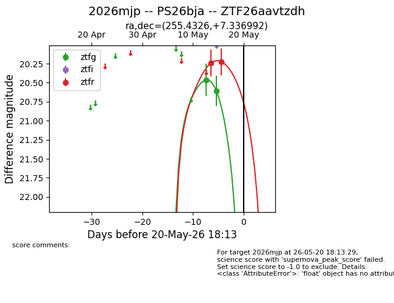
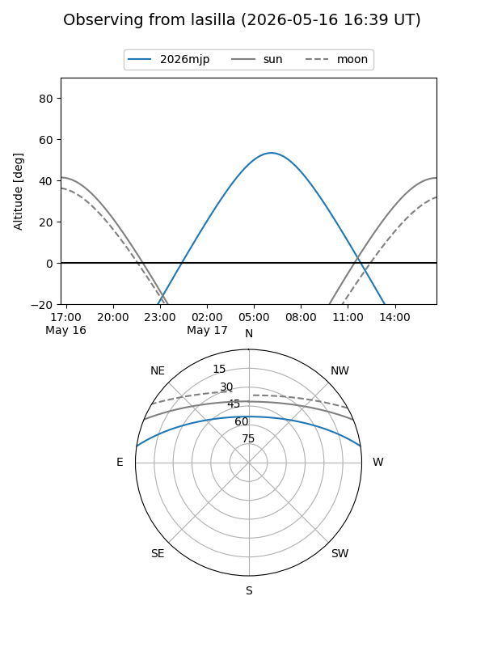
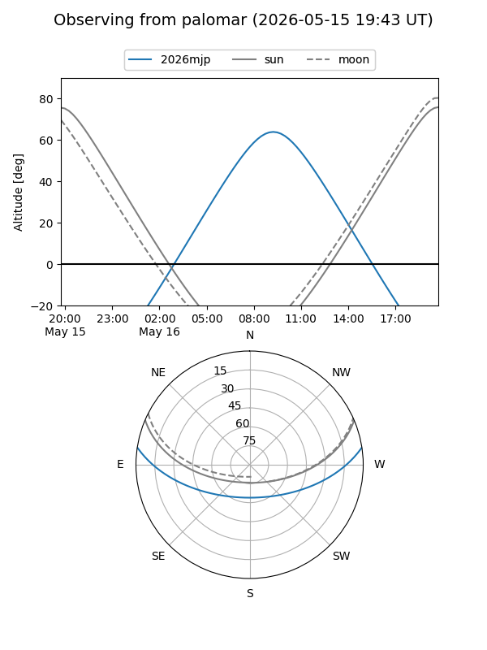
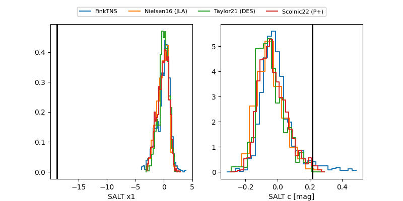

2026mjp
Target 2026mjp at 2026-05-20 18:20
Aliases and brokers:
FINK: link
Lasair: link
ALeRCE: link
TNS: link
YSE: link
alt names
ZTF26aavtzdh (ztf,fink_ztf)
2026mjp (tns,yse)
PS26bja (panstarrs)
Coordinates:
equatorial (ra, dec) = 255.4326,+7.33699
equatorial (HMS+DMS) = 17:01:43.83,+07:20:13.17
galactic (l, b) = (26.7948,+27.69839)
Flags:
Photometry:
last ztfg=20.61, ztfr=20.23
2 ztfg, 2 ztfr detections
Lightcurve

Visibility


Additional plots
